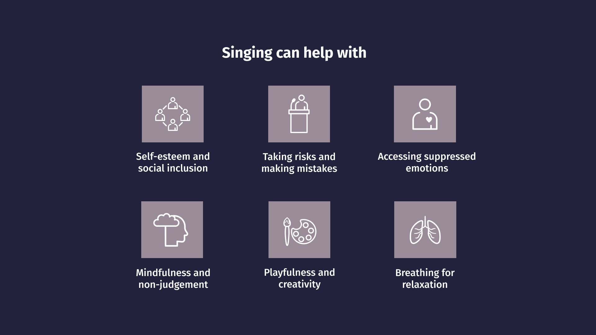
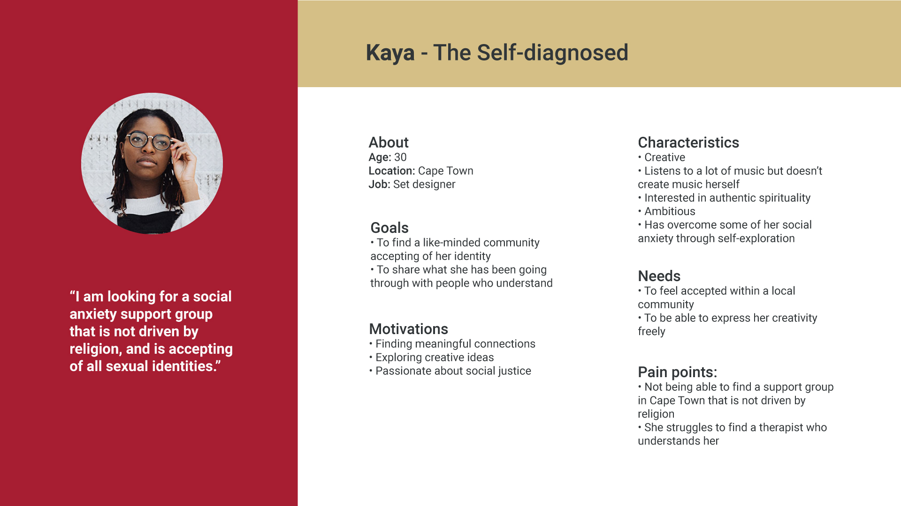
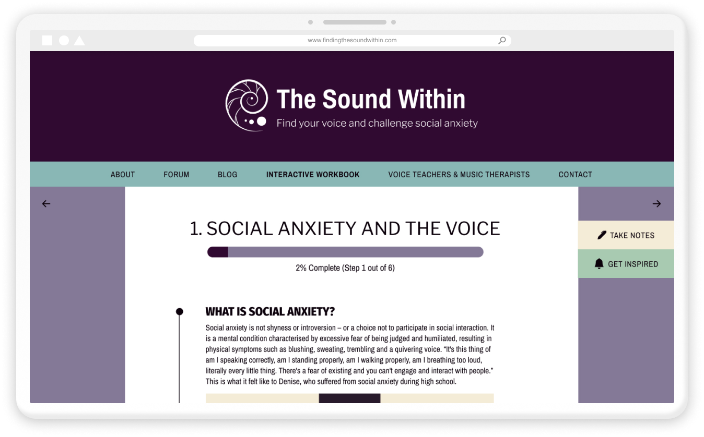
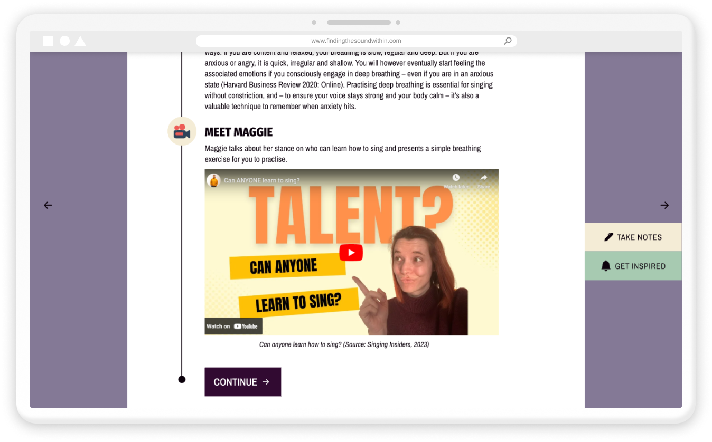

MENTAL HEALTH LX: DESIGNING A SINGING PLATFORM FOR PEOPLE WITH
SOCIAL ANXIETY
Whether singing could be a therapeutic activity for individuals suffering from social anxiety
was on my mind for some time.
So in 2022, I made it the focus of an independent study project I completed as part of a user-centred design
course at Red & Yellow Creative School of Business.
To find out what studies exist on the topic, I started with baseline research and then gathered
qualitative insights from interviews and field research. First I tried to determine whether singing could help to
reduce social anxiety, as well as what treatments exist for social anxiety and how they might relate to the process
of learning to sing.
Then I looked into how my findings could be translated into an online format.
ROLE AND SCOPE
This was an individual student project spanning from February to November 2022, completed in my own time alongside
the
full-time user-centred design programme.
Based on rigorous UX research, ideation processes and user testing, the end result was a high-fidelity interactive
prototype designed through an iterative process. After submitting the project,
I revisited the design and worked on some improvements in 2023.
SOFTWARE USED
Figma • Illustrator • Photoshop • PremierPro
Signs of Social Anxiety (Rescue Remedy, 2022)
WHAT IS SOCIAL ANXIETY?
Contrary to many people’s beliefs, it is not simply shyness, introversion or a choice not to interact.
It is a debilitating mental disorder characterised by an excessive fear of judgement that results in a masking of
one’s true self to others. According to the US-based National Social Anxiety Center,
negative self-evaluation, maladaptive perfectionism and catastrophising thought patterns cause individuals with
social anxiety to either avoid social situations completely or endure them through engaging in safety behaviours –
such as avoiding eye contact, over-preparing conversations or drinking alcohol. Normal situations which are
everyday for most people – such as asking your boss for leave, giving a class presentation or eating in public –
feel like performing in front of a highly critical audience.
These fears manifest physically in the form of sweating, blushing, trembling, heart racing or a complete inability
to speak.
“It's this thing of am I speaking correctly, am I standing properly, am I walking
properly, am I breathing too loud, literally every little thing.
There's a fear of existing and you can't engage and interact with people.”
Denise on experiencing social anxiety
Although the exact reasons could be complex, it is known that social anxiety increases through avoidant behaviour.
This is often caused by genetically-influenced inhibition, trauma and negative childhood experiences
– such as being laughed at during a presentation, for instance. The trauma could range from small to big but what’s
important is that, through avoidance, people with social anxiety never learn that social situations aren’t as
terrifying as they think they are, leaving a lot of room for catastrophising and rumination.
AVAILABLE TREATMENTS
Exposure therapy, a form of cognitive behavioural therapy, is considered the most effective evidence-based treatment
for social anxiety. It consists of identifying a fear hierarchy, and facing these fears step-by-step, starting with
the most managable one. Before tackling the challenge head-on, it is useful to imagine the situation first and
identify strategies for dealing with it. Replacing negative thought patterns with healthier ones, and finding
realistic ways of dealing with a worst possible outcome is important.
If the challenge is to ask a stranger on the street for directions, the initial fear might express as: “Everyone is
going to think I’m weird if I stumble over words.” This could be replaced with a more specific, realistic one, such
as “The person I’m asking for directions might think I’m not well-spoken.” Then you would figure out how you could
cope with the realistic worst-case outcome, and ask yourself if it would really be that bad. Bit by bit, the more
you face your fears and deal with them in a healthy manner, without safety behaviours, anxiety reduces over time.
Although some human contact is important, studies have found that self-help for social anxiety is successful – at
the very least it’s better than not receiving any help at all. For instance, a paper by Miloff et al. exploring
design considerations for The Challenger
App mentions how learning about tools and coping strategies on your
own and engaging in self-administered exposures has been found to reduce social anxiety.
GETTING HELP
According to the National Anxiety Center, social anxiety is highly treatable, but around 80% to 95% of individuals
suffering from SAD do not seek treatment and the average time until people seek treatment for those who do is 16
years. Beyond lack of knowledge about treatments and difficulties in accessing care, one of the main reasons is the
nature of the disorder: worrying what others might think if you are receiving help.
THE PROBLEM
After my initial deep-dive into existing research on social anxiety, I identified the problem as following:
Individuals who suffer from social anxiety are afraid to reveal their true selves to others because of excessive
fear of judgement. This results in avoidant behaviour and a difficulty to connect to others meaningfully. Despite
not being able to function adequately, most individuals with social anxiety do not receive suitable help.
LEARNING TO SING
Once I had a better understanding of what social anxiety is, I looked into the process of learning to sing, and its
potential for self-exploration and self-acceptance. From doing some baseline research, as well as some qualitative
research through speaking to three voice teachers, a music therapist, the head of psychiatry at Stellenbosch
University, as well as Denise, whose choir experience helped her manage social anxiety in high school, the insights
can be summarised as following:
Singing has positive effects on self-esteem and social inclusion
Voice work can teach you to become okay with taking risks and making mistakes
Voice work has the ability to uncover underlying emotions that may not be expressed in everyday life, and
therefore establish a deeper sense of who you are
Voice work has the ability to unlock creative processes through playfulness and experimentation
Techniques needed for singing, such as deep breathing, deep listening, and projecting your voice, can help to
reduce symptoms of anxiety
Mindful techniques, such as “watching your thoughts pass by” are also used to develop a non-judgemental
relationship with your voice and to disarm negative thoughts in exposure therapy
For it to be effective, the process should be modelled on graded exposure therapy
Learning to sing is a process that doesn’t happen overnight, it’s unique to each individual and requires some
willingness and dedication
One of the main themes that came up was that, if done in the right environment, without over-focusing on pitch or
singing “perfectly”, and instead encouraging playfulness, improvisation and acceptance, singing has potential for
overcoming the excessive fear of judgement that people with social anxiety suffer from. Here are some quotes from
the interviews I conducted that convey this idea.
“So when it comes to singing, it is probably the purest form of our expressions of emotions that we have. It asks of us to tap into our deepest emotions that we normally wouldn't express in daily life.”
John (Voice Teacher)
“If the music intervention, the singing intervention can be modelled in a similar way or in a complementary way [to graded exposure therapy], then I think that it could be effective. Obviously, it needs to be tested.”
Prof. Soraya Seedat (Head of Psychiatry at Stellenbosch University)
“Any good singer will tell you, ‘I'm not doing this. I'm sort of very competent at letting go and giving way to this strong phenomenon of sound and vibration.”
Jens (Voice Teacher)
“[Singing] is a very vulnerable thing and you have to put yourself out there. It makes you get used to making mistakes and be okay with being wrong because the only way you're going to learn is if you do it.”
Denise
“It's about practising constantly taking these risks of singing in front of a teacher, singing in front of a whole group.”
Erene (Voice Teacher)
“I call the ears the judgement committee and [learning to sing] is about disrupting this judgement of ‘This is sharp, this is flat.’”
Erene (Voice Teacher)
“You discover your voice, you discover yourself.”
John (Voice Teacher)
“[Singing is] like a hack on how to subtly navigate social anxiety without directly calling it that and feeling like a patient.”
Denise

A summary of insights gathered from qualitative research
CHALLENGES
It was now clear to me that there was potential for singing to help combat social anxiety, but I still didn’t know
how this could be implemented as a digital solution. Influenced by my background in e-learning design, the idea of
an online course with CBT-inspired singing exercises was swimming around in my head. But because I’m not a singing
or mental health expert, I wasn’t sure how I would be able to present this information in an authentic way. I was
thinking about copyright issues, and also how to involve all the people I had gathered this information from. How
could it benefit them as well as people with social anxiety?
Also, when talking to voice teachers, it became very obvious that – although they had all done some sort of digital
teaching during lockdown – this was not ideal. Realistic in-person feedback is essential for someone who’s learning
to sing, especially if you have a tendency for catastrophic thinking. This way unhealthy voice production
can be corrected, and the process can be tailored through comforting guidance. At the same time, Denise told me
that she believes that teaching singing digitally has benefits because “being in the physical presence of someone
can be a lot”.
To spark some more ideas, I decided to do some field research. I wanted to understand what a voice lesson with a
specific focus on self-acceptance actually felt like. So in Germany, I took an experimental voice lesson with Jens
Thoben, who I had interviewed previously, and in Cape Town, Catharine Hill, who has taught students with social
anxiety purely for therapeutic purposes, agreed to give me a lesson. My initial idea was to do an observation, but I
realised this would have been problematic due to the intimate nature of a therapeutic singing lesson.
The main insight from these lessons was that just having theoretical information is not enough. Repetition of
interactive, practical exercises and taking on a role to distract your mind – such as “pretend you're an opera
singer” – are important for unlearning nervous responses. But it was a random comment by Catharine that actually
inspired the main idea for a solution. She mentioned how it would be really beneficial for people to know that
singing lessons are not just for singers with prior experience because this would get voice teachers more work. I
now realised that the solution should be about giving people this empowering information – that singing has
potential as a therapeutic activity for social anxiety – and then connect those who are interested to professionals
who work in this context.
An early storyboard describing the onboarding process
THE SOLUTION
I eventually arrived at the following concept: a platform for individuals who experience social anxiety to learn
about coping strategies in the form of simple self-administered voice exercises, listening exercises and cognitive
behavioural therapy-inspired exercises. These would build up to a final exposure: booking an in-person voice or
music therapy session.
These exercises would be contributed in video-format by voice teachers and music therapists. Learners would get an
insight into how they work, and would be able to decide who they feel most comfortable with before booking an in-person session.
After learning about exposure therapy, and practising at home in a safe space, learners apply their knowledge in an
interactive branching scenario prompting them to imagine singing in front of someone. Once this is completed, they
are presented with a directory of voice teachers and music therapists in their area, with an option to book a lesson
– if ready.
Although it is not to be considered a replacement for in-person therapy, this platform may draw attention to a
helpful activity that is less stigmatised and potentially open further doors.
To make it sustainable, a percentage could be taken for each booking that is made through the site.
A learner journey map with possible touchpoints
COMPETITIVE RESEARCH
An online search did not reveal many platforms that specifically speak to combatting social anxiety through singing.
One platform that comes closest is Awaken your radiant voice. It offers a 7-week online course covering
subjects such as ‘Learn to love and trust your voice’, ‘Sing more and find joy and freedom’ and ‘Social anxiety and
managing the nervous system’. However it costs $497, which would exclude a lot of people who need help.
No other singing apps focused on social anxiety specifically, but there were a few that were promising because they
included the possibility of non-singers learning how to sing. Singdaptive is interesting because it offers a
personalised video exchange with vocal teachers, making the experience interactive and tailored to one’s specific
needs. In terms of the concept, tschzant is worth mentioning because of its focus on getting non-singers to
sing for mental health reasons. It is also linked to larger community events such as digital choirs but the app's
learning approach seems to be focused on ‘singing correctly’, which could be a stress factor if it triggers
perfectionism.
THE TARGET MARKET
Because avoiding talking to others is the nature of social anxiety, it was difficult to research the target market.
I tried reaching out in social anxiety community networks asking for further interviews and survey participation.
But to no avail, perhaps also because I had no budget to provide remuneration.
I then decided to base my personas on information I had gathered through looking at social anxiety blogs, comments
in community forums, and real-life stories I read about in the book How to Be Yourself: Quiet Your Inner Critic
and Rise Above Social Anxiety by Ellen Hendriksen. It was also important to not base the target market on age
because – although onset is usually in childhood or adolescence – many don’t seek treatment, so the information
would be useful throughout different stages of life. The main uniting factor for the target market is the fear of
judgement. I decided on three segments based on the learner's treatment status: 'subclinical & undiagnosed', 'self-diagnosed' and 'diagnosed'. Subclinical
refers to people who suffer from the symptoms but may not qualify as having a disorder yet.
Subclinical & Undiagnosed
Unaware that SAD is a treatable illness but wants to understand why they are so
anxious.
Self-diagnosed
Has the language for their condition and accepts that they need therapy but haven’t
found the right support group.
Diagnosed
Is receiving treatment but is interested in further at-home practice and connection
beyond interacting with a therapist.

Personas based on three target market segments
THEMATIC ANALYSIS
To figure out what the content surrounding the video exercises would be and how to structure each section, I
compared the typical process of learning to sing with the typical exposure therapy process, and conducted a thematic
analysis of all the interview material.
Interview quotes sorted according to themes using FigJam
Although they changed slightly throughout the process, the final section headings based on the themes that came up
in the interviews would be:
Social anxiety and the voice
Techniques to relax the body
Identify fears and set goals
Listening deeply
Facing your fears
Letting go
WIREFRAMING
Once the rough structure was identified, I looked at mental health platforms, self-help platforms, and e-learning
platforms to find design inspiration and understand what the current conventions are. Then I started creating low-fi
paper SCAMPS.
Low-fi paper SCAMPs created using the Design Studio Method
PAPER TESTING
At this point I was still thinking about the solution as an online course, but then I decided to change the wording
‘Course’ to ‘Guide’. Calling it a course would be implying that it’s a complete solution, although it's just a
preparation to initiate taking further steps.
After deciding on a final design, I did some testing of the paper SCAMPs with two participants. I used the wording
‘Guide’ on the homepage and wanted to see if it made sense to users. I gave them the following tasks:
You are interested in finding out more about how singing could help you manage social anxiety. What would you
do?
You would like to see what others are saying about this first, where would you click?
(Once in the guide) Where would you add personal notes about your progress?
Book a singing lesson.
Find some articles to read about this topic.
(On blog page) What category interests you?
Most of the navigation labels, such as ‘Blog’ or ‘Forum’, were self-explanatory but there was some confusion around
‘Guide’ and ‘Directory’. For task 1, the first participant chose ‘Directory’ and then considered the blog because
she thought this is where you find resources.
“To me ‘Directory’ is just where you find anything.”
Participant 1
The second participant understood that ‘Directory’ is where you find voice teacher listings but thought the wording
was outdated:
“Directory makes sense, but I think it sounds old school.”
Participant 2
TREE TESTING
To further investigate this confusion around the navigation labels ‘Guide’ and ‘Directory’, I conducted a tree test
on Optimal Workshop with six participants. They were asked to answer the following questions using the homepage
navigation:
You are interested in learning how singing could help you manage your social anxiety. Where would you find a
resource that can help you work through a step-by-step process and understand more about how singing could help
with overcoming social anxiety?
You would like to book a singing lesson. Where would you find a list of local teachers with their contact
details?
Question 1
Question 2
Tree testing results from Optimal Workshop
For the first question, three out of six participants got it right, meaning only 50% knew where to find the main
items of the website.
Four out of six answered the second question correctly. So I reconsidered the wording ‘Guide’ and ‘Directory’.
INFORMATION ARCHITECTURE
For the final information architecture, ‘Guide’ became ‘Interactive Workbook’ and ‘Directory’ became ‘Teachers and
Music Therapists’. Because the main process is not called a course anymore, I also changed the wording of ‘Lessons’
to ‘Steps’.
Information Architecture with new navigation labels
MID-FIDELITY WIREFRAMES
Now it was time to digitise the low-fi paper SCAMPs.
Mid-fi wireframes created in Figma
LEARNER EXPERIENCE
Even as a preparation, the learning experience should be as interactive as possible, and implement instructional
design best-practices to engage the learner. After all I had identified that simply having the knowledge is not
enough to unlearn deep-rooted anxiety responses.
When thinking of the content and interactivity of the workbook, I loosely based it on David Merrill’s principles of
instructional design, which I came across during my internship in the instructional design department at Red &
Yellow Creative School of Business. They are as following: problem-centred, activation, demonstration, application
and integration.
CONTENT
When writing the copy, I started off describing what social anxiety is and called to mind a problem of how it is
dealt with in society: it is not introversion or a choice to be reclusive, which obstructs access to help. Through
inserting some personal experience, I hoped that this will further activate the content, making it relatable to the
learner.
I included sliders for demonstration activities, and text inputs for application activities, such as identifying
your fears. I also included icons with a different colour background to signal different types of interaction.
The branching scenario prompting users to imagine singing in front of a voice teacher is a preparation for the final
integration activity, to actually attend the in-person singing lesson.
USER JOURNEY & FIRST HI-FI PROTOTYPE
After conducting the research, I had identified that the platform’s message and look and feel should convey a sense
of coming home,
feeling safe and supported, but also one of hope, excitement and new opportunities. Once I had settled on a colour
scheme that represented this, I started designing an initial hi-fi prototype in Figma.
A colour scheme conveying a sense of safety
I decided on Creating sounds from inner space – an interactive workbook as a name for the workbook and one of
the main ways of finding it would be through relatable articles on the blog.
Mia, the subclinical and undiagnosed persona, might find the platform because she is scrolling through social media
hoping for answers. She wants to understand why she gets so nervous around people, but although she knows how she
feels,
she doesn’t have the right language to describe her symptoms yet. Seeing the title of a blog article that
mentions what she's struggling with grabs her attention. Once she clicks the article, she reads an uplifting
story she can relate to, encouraging her to have a look around the website. In the forum, she sees people talking
about what she is going through. Surprised but relieved that she is not alone, she decides to go through the
workbook.
A user journey showing an early version of the hi-fi prototype
Further ways of reaching the workbook could be Social Anxiety Support Forums on social media, referrals by
therapists as add-on activities and recommendations at schools. Another promising channel could be social
prescribing – a concept which has been rolled out in Ireland, the UK and the Netherlands. Health professionals, such
as GPs, prescribe non-medical activities for patients suffering from mental health issues such as isolation,
depression and anxiety while they are on the waiting list to receive therapy.
USABILITY TESTING
Once the content of the high-fidelity prototype was largely in place (I had written the copy, created infographics,
sourced some images, inserted screenshots as examples of the videos, and the branching scenario was functional), I
conducted some usability testing with three participants. The goal was to figure out what journey they would take on
the platform and if the last step, to book a voice or music therapy session, seemed natural to them. All
participants had completed an online course before, meaning that they were familiar with established e-learning
conventions.
I asked them to complete the following tasks and made it clear that they don’t have to read everything within the
workbook, because normally this would be a longer process with breaks in-between.
Have a quick look at the homepage. What do you think it’s about?
Now you can have a bit more of a look, scroll around and then tell me what you think the main purpose is.
Follow the journey you’re most interested in.
[When they get to the last screen] What would you want to do next?
Most of the participants understood what the site was about after just looking at it for a few seconds, although to
one participant it wasn’t immediately clear that it was about singing specifically. Connecting art or music teachers
to students was mentioned, and – after asking a follow-up question – I realised this was because of the navigation
label, ‘Teachers & Music Therapists’. I changed it to ‘Voice Teachers & Music Therapists’ to make it more specific.
Further improvements that I made based on usability testing:
Usability improvements
ACCESSIBILITY
Since the pre-submission period was focused on coming up with an idea and demonstrating how it would be used, some
of the
finer, but nonetheless important details were neglected. When evaluating the initial design, I realised there were
some crucial accessibility fixes that had to be done.
Using the A11y - Color Contrast Checker Figma plugin, I made sure each page has efficient contrast (at least 4.5:1,
according WCAG 2.1 guidelines) through changing font colours and backgrounds accordingly.
The font colour of the main navigation items as well as the back/forward navigation arrows of the workbook are dark
now.

The navigation font colour changed from white to black
To add interest and improve clarity, I also decided to take a more in-depth look at the choice of fonts and visual
hierarchy. Previously I had paid attention to choosing a font that was easily legible when reading long-form text,
but I hadn’t looked at choosing different fonts for headings and subheadings
– it was all just Archivo Narrow.
Although functional for the initial concept presentation, I wanted to make the design more appealing by adding a
touch of personality, while maintaining a clear hierarchy.
As inspiration, I looked through Fonts in the Wild’s examples of Google font pairings, and then played around with
Font Joy to generate font pairs using the
body font, Archivo Narrow, as a base. I eventually settled on adding Fira Sans Condensed for subheadings (H2) and
Libre Franklin for main headings (H1).
Once the fonts were decided upon, I took another look at sizing, paragraph length and line height to ensure they
enhanced the purpose of the platform.
With the help of Tim Brown’s modular scale, I defined a new type scale for web and mobile. Since the platform
contains text-based learning content,
paragraph lines had to be an appropriate length for long-form reading. According to an article by pimpmytype.com, a line
length of 60 to 80
characters
is close to what we are used to from reading books. I also decided on a name for the platform, "The Sound
Within", and designed a logo. Initially I had just used "Singing with Social Anxiety"
because time constraints didn’t allow for an in-depth naming process.
Header with the platform's name, byline and logo
HOMEPAGE REDESIGN
After taking a healthy break from the project, I also realised that the homepage needed to be re-designed.
Previously, an infographic I had to design as part of my studies was the first thing that users saw on the
homepage, and when they scrolled down they were able to read a detailed explanation of the workbook.
I could see now that the inclusion of the infographic was influenced by a subjective bias – it was part of a student
brief, and because I had put work into fulfilling this obligation, I felt like it had to be there.
But while doing some design research, and looking at similar websites, I realised the design was not conducive to
grabbing the user’s attention, and providing them with to-the-point, easy-to-digest information about what the site
is about.
The old and new homepage
Although some of the stats and quotes in the infographic would still be useful to convey the message, they had to be
presented in a more digestible format.
So I extracted some of the graphics, but re-organised them on the page, next to an above-the-fold, short explanatory
blurb and a call-to-action to find out more.
To determine if this aids the user in understanding the website’s message at first sight, a useful strategy would be to test
the new design using a five-second test.
THE WORKBOOK
I now had a more polished high-fidelity prototype to show what the typical journey on the platform might look like
(see video below).
Interested learners will work their way through a step-by-step process
to gather empowering information and engage with relevant preparatory exercises to practise at home.
A step-by-step process with preparatory exercises
BRANCHING SCENARIO
Once learners have gone through the material,
they are prompted to imagine participating in a voice session and apply their learned knowledge through an
interactive branching scenario.
An exercise to apply learnt knowledge
SELECTING A VOICE TEACHER OR MUSIC THERAPIST
When ready, learners can look through a directory of local professionals and select one they feel comfortable with.
They might already know some of the voice teachers and music therapists through the exercise videos in the workbook.
Learners have the option to look at a directory of
professionals
BOOKING SYSTEM
An essential component of the learner journey is the booking system.
The idea, after all, is that once sufficiently prepared, the learner would be ready to book an in-person voice
or music therapy session with a professional. How this booking would happen through the site had not been fleshed
out yet, so I decided to look at case
studies and user flows for online booking forms, as well as best practices,
and defined a list of criteria the system should adhere to:
Simple booking form with minimal required fields, in this case
Name & surname
Phone number
Email
To avoid interruption of the flow, let the user book an appointment first, and then ask only for the
absolutely necessary details
Multiple steps on separate pages are clearly marked
Consider radio buttons instead of dropdowns for less than six items (easier to see all that’s available and
decreases interaction time)
Explain why you’re asking for sensitive information (such as phone number)
The user should be able to see what they are paying for at one glance, and have the option to change it
Learners will enter the booking process through selecting a professional, so the professional’s name, type of
session (voice or music therapy), city and travel distance from the user’s current location will be pre-selected on
the first page of the booking process, with an option to change it. This way they can clearly see what they are
paying for, and can proceed if happy. On the second page, they can select a date, and quickly see what time
slots are available. Once they select the slot, they are asked to enter their information (name & surname, email and
phone number) and finally they can pay by choosing one of several payment options.
Learners can book an in-person voice session through the platform
VIDEO EXAMPLES
Exercise videos presented by local voice teachers and professionals had already been part of the initial concept,
but after some thought into scalability, I realised this idea needed further thought. The videos in the
workbook will be specific, audience-tailored presentations of relevant exercises, and therefore a more
permanent element of the workbook. These would likely be contributions by early members, increasing their exposure
throughout the platform. To show how this would work, I have included existing YouTube videos with relevant content
for now. When the platform goes live, similar videos would have to be created with local professionals.

Example of video lesson integrated into the workbook
material
But the database of voice teachers and music therapists needs to be able to grow, depending on how many suitable
professionals are willing to be a part of the platform in a given city. Therefore, because new videos by new members
cannot be added to
the workbook limitlessly, each directory listing will include a link to a sample lesson video, which is a
different format to the exercise video. A free listing might exclude a video shoot, but if one wants to give
potential students some insight into how a session might be conducted, paying for this extra option would be
desirable. Below is an example of what the sample lesson video slider might look like, using screenshots from
existing YouTube videos of voice lessons.
Learners will be able to watch a sample session
THE FORUM AND BLOG
The purpose of the blog and the forum pages are to create a safe space for individuals with social anxiety to feel
at home and see others talking about topics they can relate to. They can also share their voice-building experiences
with others, and receive support from the community.
Learners might find the platform through blog
articles they relate to
RESPONSIVENESS
Even though a lot of e-learning still happens on desktop devices, there is no need to explain how essential a
responsive design is – especially for content that may require some privacy (when practising some of the voice
exercises for instance). Below is an example of what some of the key pages, as well as the workbook, will look like
on a mobile device.
A mobile version of the website
NEXT STEPS
I would like to get further feedback on the learner journey from voice teachers, but also from people who suffer
from social anxiety. Because going through the workbook is an intimate and longer process, I would like to give them
the opportunity to do this in their own time, and ask them some questions afterwards. The main objective would be to
see how learners feel after they have engaged with the content more in-depth.
The booking process would benefit from some usability testing, and interviews with voice teachers and music
therapists, as well as potential users, would be helpful to further determine what information is relevant before
booking a session.
Before launching the platform, I am going to focus on community-building through sharing my own experience in a blog
with the working title, "Finding the sound within".
Lastly, I intend to use my web development skills to code the front end of the platform.
TAKEAWAYS
One of the most important things I learned through working on this project, especially through observing and
participating in voice lessons myself, is that how you teach is incredibly important.
When it comes to working with individuals who suffer from social anxiety, it is essential to use non-evaluative
teaching methods, and a pedagogical style that is sensitive to the characteristics of social anxiety disorder. It's
therefore necessary to implement a process to ensure that the professionals on this platform work within this
framework.
THE VALUE PROPOSITION
Combining the need for access to therapy, a need for an inclusive social anxiety platform, and a need to expand the
customer base for voice teachers, this platform could be a constructive way of dealing with
a societal problem as well as an economic problem without exploitation. Although a percentage will be taken, voice
teachers don’t have much to lose because they only pay once a booking is actually made, and site visitors will
receive useful information, even if they don’t book a lesson.
Not only will it connect voice teachers to a new audience, but it
will also introduce a relatively unexplored concept to the wider public. The specific benefits of singing to
overcome social anxiety often make sense to people, but have not been researched in-depth – available studies are
often focused on passive music therapy for general anxiety disorders and depression.
There is a lot to explore when it comes to using voice work – an expression of what literally and figuratively comes
straight from inside of you – to overcome intense fears of judgement associated with social anxiety, and this
platform could be a stepping stone.